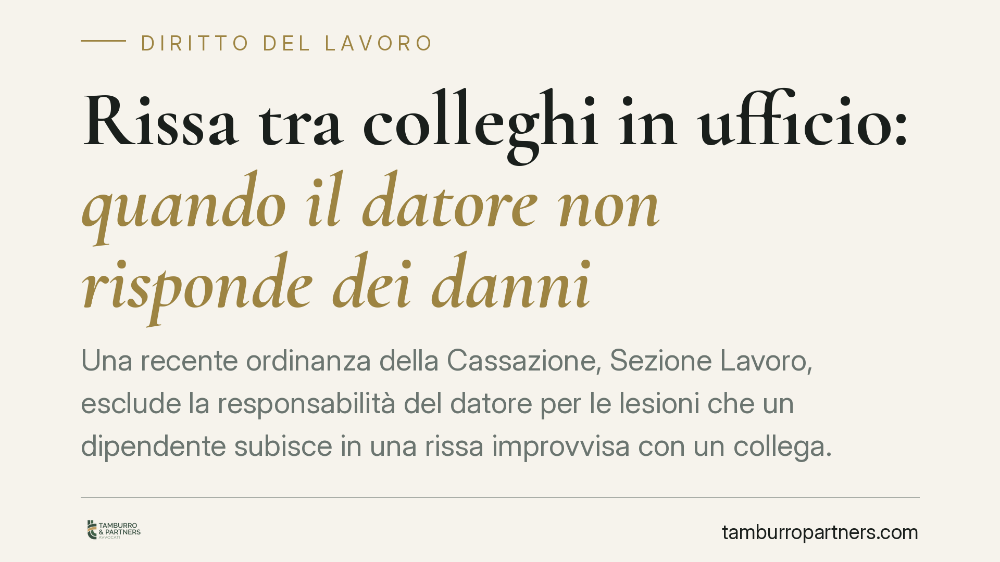

Rissa tra colleghi in ufficio: quando il datore non risponde dei danni
Una recente ordinanza della Cassazione, Sezione Lavoro, esclude la responsabilità del datore per le lesioni che un dipendente subisce in una rissa improvvisa con un collega. L'evento imprevedibile interrompe il nesso causale con le mansioni. Un chiarimento importante sui limiti dell'obbligo di sicurezza previsto dall'art. 2087 c.c. e sul rapporto tra tutela previdenziale e responsabilità civile.

Il caso
Un lavoratore riporta lesioni durante una colluttazione nata all'improvviso con un collega sul luogo di lavoro. Agisce in giudizio chiedendo il risarcimento al datore, sostenendo la violazione dell'obbligo di tutelare l'integrità fisica dei dipendenti. La Cassazione, Sezione Lavoro, ha respinto la domanda: l'aggressione fra colleghi, scoppiata senza segnali premonitori, è un fatto imprevedibile che spezza il collegamento tra l'infortunio e l'attività lavorativa.
(Il riferimento di estremi — numero e anno dell'ordinanza — è da verificare nella banca dati ufficiale prima della pubblicazione.)
Inquadramento normativo
Il perno della vicenda è l'art. 2087 c.c., che impone all'imprenditore di adottare le misure necessarie, secondo la particolarità del lavoro, l'esperienza e la tecnica, per tutelare l'integrità fisica e la personalità morale dei lavoratori.
Si tratta di una norma di garanzia, non di una forma di responsabilità oggettiva. Il datore non è un assicuratore di qualunque evento dannoso accada in azienda. Risponde quando l'infortunio è riconducibile a una sua condotta colposa — omessa adozione di cautele esigibili — e quando esiste un nesso causale tra la violazione e il danno.
La distinzione decisiva è tra imprevedibilità ed estraneità alle mansioni. Una rissa improvvisa è imprevedibile perché il datore non poteva anticiparla né prevenirla con misure ragionevoli; ed è estranea alle mansioni perché l'aggressione non ha alcun legame funzionale con l'attività assegnata. Entrambi gli elementi concorrono a interrompere il nesso causale.
Il contrappunto: quando il conflitto è noto
La pronuncia non va letta come una liberatoria generale. Il discorso cambia radicalmente se il clima conflittuale era conosciuto e non gestito. Tensioni ricorrenti tra colleghi, minacce segnalate, episodi pregressi documentati trasformano l'aggressione da evento imprevedibile a rischio prevedibile.
In quel caso l'omessa vigilanza o la mancata adozione di misure organizzative possono fondare la responsabilità datoriale. L'obbligo di tutela include anche la gestione delle dinamiche relazionali che possono sfociare in violenza.
Qui entra in gioco il D.Lgs. 81/2008: l'art. 28 impone la valutazione di tutti i rischi, compreso lo stress lavoro-correlato, mentre l'art. 29 disciplina le modalità di redazione del Documento di Valutazione dei Rischi (DVR). Un DVR che ignori conflitti interni noti o situazioni di tensione documentata è uno strumento incompleto, con riflessi sul piano della responsabilità.
Tutela INAIL e responsabilità civile: due logiche distinte
Un chiarimento utile riguarda il rapporto con la copertura assicurativa. La tutela INAIL segue regole autonome rispetto alla responsabilità civile del datore.
L'assicurazione obbligatoria contro gli infortuni (DPR 1124/1965 e D.Lgs. 38/2000) copre gli infortuni avvenuti in occasione di lavoro, ma non quelli derivanti da rischio elettivo: il rischio volontariamente affrontato dal lavoratore per ragioni estranee all'attività, o riconducibile a una lite privata. Una rissa personale, slegata dalle mansioni, può quindi restare fuori dalla copertura previdenziale.
Ne deriva che la sorte dell'indennizzo INAIL e quella del risarcimento civile possono divergere: l'assenza di responsabilità datoriale non implica automaticamente la copertura previdenziale, e viceversa.
Implicazioni pratiche
Per il datore di lavoro la pronuncia conferma che l'obbligo di sicurezza ha confini definiti dalla prevedibilità e dall'esigibilità delle cautele. Non esiste un dovere di impedire qualunque fatto violento imprevisto.
Resta però intatto il dovere di monitorare e gestire i conflitti noti. La differenza tra assenza di responsabilità e condanna passa spesso dalla documentazione: ciò che l'azienda sapeva, ciò che ha fatto, ciò che ha omesso.
Cosa fare in concreto
- Aggiornate il DVR includendo la valutazione dello stress lavoro-correlato (art. 28 D.Lgs. 81/2008) e le dinamiche relazionali critiche.
- Tracciate le segnalazioni di conflitti, minacce o tensioni tra dipendenti: registrate data, contenuto e interventi adottati.
- Formalizzate le procedure di gestione dei conflitti interni e definite i canali di segnalazione a cui i lavoratori possono rivolgersi.
- Intervenite tempestivamente sulle situazioni note: un provvedimento disciplinare o una separazione organizzativa documentano la diligenza datoriale.
- In caso di infortunio da aggressione, è opportuna un'analisi puntuale della prevedibilità dell'evento e della distinzione tra copertura INAIL e responsabilità civile.
Disclaimer
Contributo informativo a cura di Tamburro & Partners - Avv. Giuseppe Tamburro. Non costituisce parere legale.
Ogni storia di lavoro ha i suoi tempi.
Se gestisci HR e vuoi un confronto su contenzioso, ispezioni o licenziamenti, scrivi allo studio. Ti rispondiamo entro un giorno lavorativo.